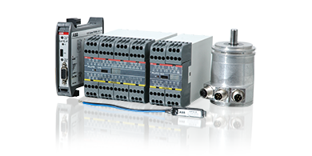

Programovatelné bezpečnostní kontroléry Pluto
Pluto je kompaktní a výkonné programovatelné bezpečnostní řešení pro široké spektrum aplikací. Hodí se tam, kde je potřeba řídit více bezpečnostních funkcí a pracovat s vyšší logikou řízení stroje nebo linky.